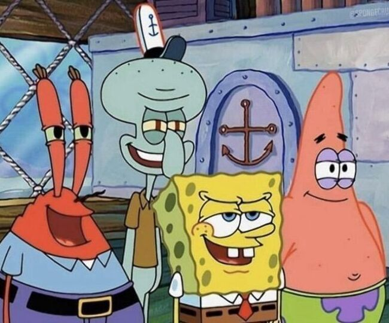

У нас найсмачніша їжа, а особливо бургери!

Красті Краб - це відомий ресторан швидкого харчування у Бікіні Боттом, заснований Містером Крабсом. Саме тут готують ті самі легендарні крабсбургери, за якими всі з'їжджаються сюди знову і знову. Наш заклад давно став одним із найвідоміших місць у всьому океані! Разом із Містером Крабсом у ресторані працюють Спанч Боб і Сквідвард, а також до них кожного дня приходить їх друг Патрік, якого вже можна вважати теж частиною цього ресторану, тож нудно тут не буває..

Засновник — Містер Крабс
(рахує ґроши)
